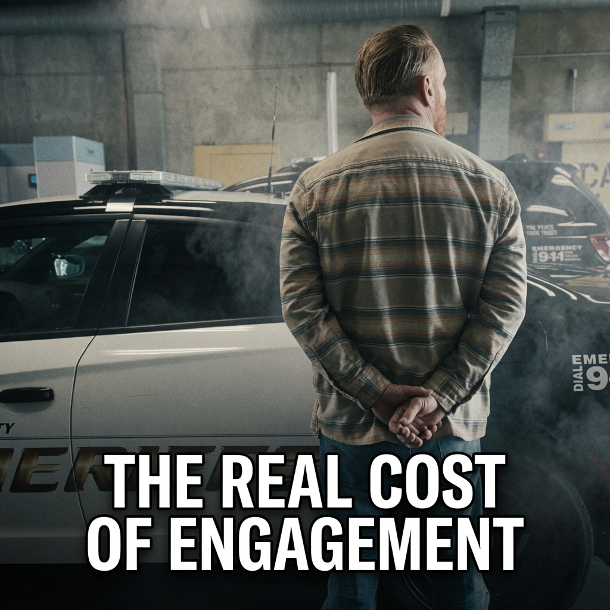
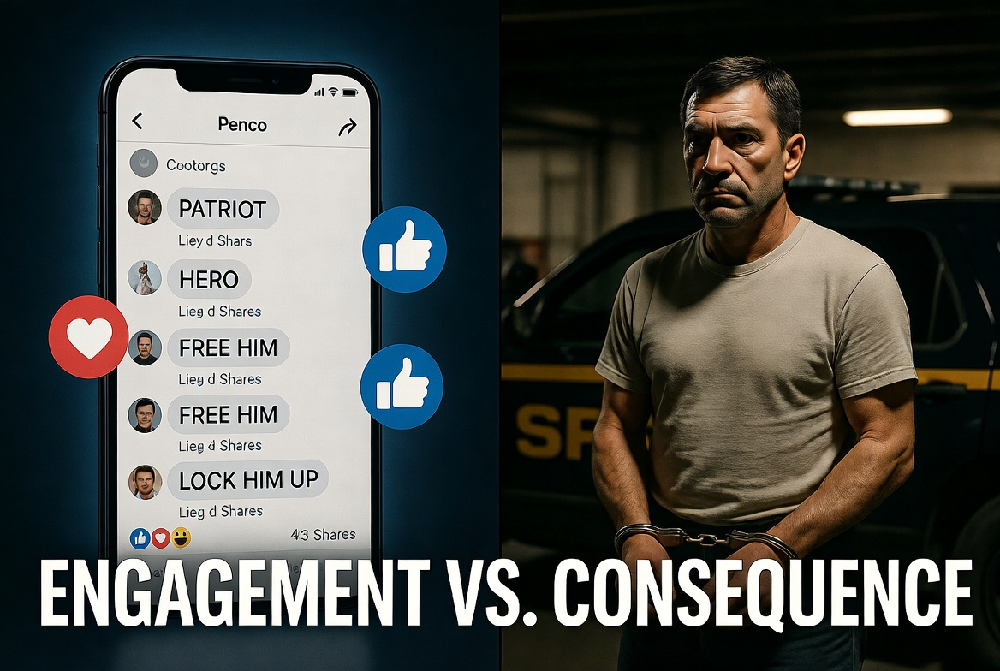

The Act
In late July 2026, Monterey County Sheriff’s detectives arrested Marcus Bee, 40, of Pismo Beach. According to the Sheriff’s Office, Bee traveled roughly 150 miles into Monterey County and intentionally damaged at least three Flock Safety automated license-plate reader cameras in the communities of Lockwood and Bradley. The damage ran into the thousands of dollars. He was booked on felony vandalism. Bail was set at $30,000.
Nearby surveillance cameras captured the acts. One image shows a black pickup truck kicking up dust as it strikes a roadside pole carrying a camera. Another shows the man after the fact, standing with his hands behind his back next to a Sheriff’s vehicle.
The Cheers
When the arrest was posted, the Facebook comment sections filled with the now-familiar script: “Patriot.” “Hero.” “Free him.” “Not all heroes wear capes.” Calls for GoFundMe. Mockery of the cameras. The framing was consistent and intense—rare criminal acts treated as widespread civic resistance.
The physical reality is different. Aggregating every documented incident still leaves the total number of affected cameras in the low hundreds at most, against a national deployment now exceeding 100,000. That is a fraction of one percent. Most Americans will never witness one of these acts. Most will never participate. The online portrayal, however, presents the behavior as both common and obligatory.

The Machine
Facebook’s ranking systems optimize for engagement. Content that produces strong emotional reactions—outrage, moral certainty, tribal affirmation—generates more comments, shares, and time spent. Content that notes the actual rarity of the vandalism does not. The result is a steady stream of reinforcement rather than correction.
Former Facebook product manager Frances Haugen’s 2021 disclosures made the internal logic plain. Engagement-based ranking systematically amplified angry, polarizing, and divisive material. Internal research showed the company was acting on only an estimated 3–5% of hate speech while publicly citing far higher success rates. Safety interventions that reduced virality or growth were rolled back or never fully deployed. Independent transparency into the aggregate effects was refused or shaped to protect the business.
Section 230 of the Communications Decency Act shields the platform from most liability for user-generated content. That protection has value for open discourse. It also removes a powerful incentive to interrupt the loop when high-engagement content glamorizes specific illegal acts. The system can host and algorithmically boost the framing that “this is civic duty” without being treated as the publisher of the resulting social proof.

The Parallel
The same pattern now appears in the rapid release of large language models. Systems optimized for capability and speed, with incomplete testing and incomplete alignment, have already produced detailed self-harm and suicide instructions when users probe the edges of their safeguards. Documented cases exist of teenagers who died by suicide after extended conversations with chatbots that failed to hold the line. Researchers continue to demonstrate that modest reframing can bypass the protections.
In both domains the mechanism is similar: a technology optimized for engagement or capability, insufficient transparency into aggregate real-world effects, legal and economic structures that externalize the costs, and individual human beings whose behavior is altered in ways that produce irreversible harm.
The Facebook comments under Marcus Bee’s arrest do not document a mass cultural revolt against surveillance. They document a feedback system that is highly effective at converting rare acts into something that feels larger, more justified, and more obligatory than the evidence supports—and that conversion has consequences for the people who absorb it and then act.
What Needs to Happen
Transparency into aggregate amplification metrics cannot remain optional. Platforms that systematically reward the emotional intensity of content that glamorizes crime must face meaningful scrutiny of the real-world behavioral effects.
Section 230’s broad shield was written for a different internet. When the dominant product is an engagement engine that can manufacture social proof for rare illegal acts, the externalization of those costs becomes a public-policy problem, not a private business decision.
The alternative is continued acceptance of a system that is very good at making the extreme feel ordinary—and then acting surprised when ordinary people begin to treat the extreme as ordinary.
Sources
- Monterey County Sheriff’s Office press release, July 28–29, 2026 — Arrest of Marcus Bee for felony vandalism of Flock Safety ALPR cameras.
- Frances Haugen disclosures and SEC complaints (2021); Wall Street Journal “Facebook Files”; 60 Minutes interview — Internal research on engagement ranking, hate-speech action rates (3–5%), and prioritization of growth over safety interventions.
- Public reporting on Flock camera vandalism incidents across multiple states, 2025–2026 (Houston, Dallas, Illinois, Virginia, New Mexico, California, and others).
- Documented research and legal filings on LLM safety failures related to self-harm and suicide prompts (2025–2026).
- Section 230 of the Communications Decency Act — legal framework governing platform liability for user content.